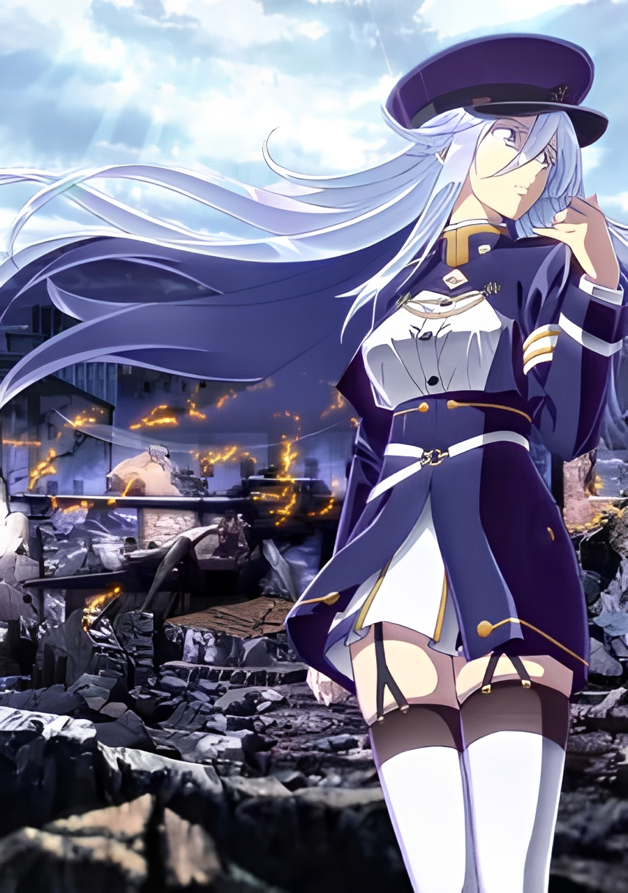
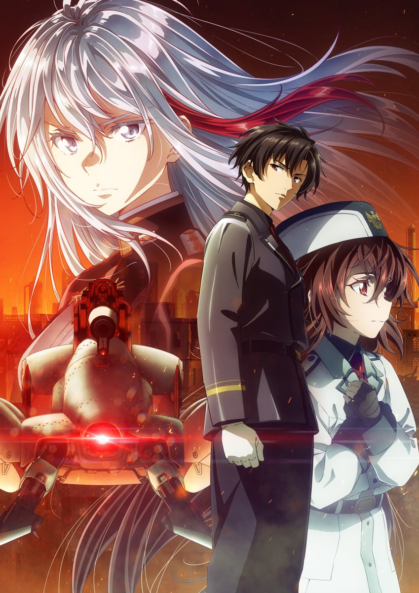

86 EIGHTY-SIX: Part 1 (2021)
Lena takes command of the Spearhead Squadron's "86" pilots, including Shin, and begins to see the brutal truth behind the Republic's "bloodless" war.

86 EIGHTY-SIX: Part 2 (2021)
Shin and the surviving members of the Spearhead Squadron fight to escape the collapsing Republic and find a true place to belong.

86 EIGHTY-SIX: Under Pressure (OVA, 2022)
A bonus story following Shin's squadron as they take on a side mission away from the main front lines of the war.